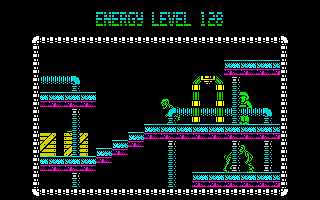
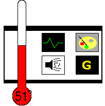

| Deviants Players, 1988 |
 Y'know, I have a skeaky feeling the lads might have been having a laugh when they told me this was an egg... |
A long, long time ago, the future was 2D. We'd still battle aliens in faraway planets, but... they'd be flat. And green. Now, an asteroid is heading for Kraus, a planet probably nothing like Earth. This asteroid is inhabited by hundreds of little... green... aliens. But it's not the first time they've been. Many moons ago, pilots flew up to the asteriod and planted bombs, hoping to blast the asteroid into tiny little pieces. Unfortunately, the pilots somehow died before they had the chance to arm the bombs. Tch, what luck, eh?. Anyway, help has arrived, in the form of... (drum roll)... YOU! Your mission (should you choose to load the game in) is to walk around, shooting these rather scrawny aliens, arming your ill-fated ancestors' bombs as you go. The bombs have 6 switches. However, it's not easy. Every switch toggles another. For instance, if you toggle switch #1, switch #4 will also toggle. When all switches are on (flashing), the bomb is armed and you continue the game normally - running around shooting. However, you only have 30 seconds to arm the bomb once you start, and you'll often need every second. If you fail to,then it's game over… the whole place er... doesn't go up in smoke. |
| There are 20 of these
bombs spread around the world. Take time to learn the
pattern of the switches. It'll help tremendously. Of course, when you're not armarming bombs, you still have to destroy the baddies. They're ugly little... things. Thankfully, there's plenty of ammo lying around (in the shape of little white packages), and a few energy rechargers, should you feel the need to "refresh yourself". To help you find your way, there are teleporters placed all over the place, each having their own name (Deviants, Guzzloid and Cerburus are just a few that come to mind) that will teleport you round the game's huge map. Overall, it's a bit of a mixed bag. The shooting bit's been done soooo many times before, and the bomb bit can seriously ("Kiss" - Ed) you off. However, the graphics are crisp, clear, and the aliens crumble when you shoot them. A little touch like that could make the difference between a good game, and a bad game. However, here, it doesn't. It's mediocre whichever way you like your aliens killed. |
 And if you look to the left, you'll see an energy station... |
|  |
Graphics: 76° They're
not bad. Lots of scenery. Well, pipes and wooden crates.
And the crumbling aliens is a good touch. Sound: 31° No. No. No. No again. It's pathetic. The title tune is bad, and sticks when you redefine the keys. And the SFX aren't much cop either. Gameplay: 42° It's all been done before. In many places. The bomb puzzle is probably the closest to an original idea. Gamelife: 64° It'll have you reaching for your joystick... once. You'll get bored walking around, even through the map is pretty large. Summary: It's crap, but in a funky, skillo, etc, etc. Jamie Percival |
| Back to Contents |